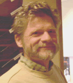

氾濫するサイバー情報の進化分析
Masaru Kitsuregawa
(University of Tokyo, Japan)
喜連川優（東京大学）
|  | Ontology and Database Confluence オントロジーとデータベースの合流 Stefano Spaccapietra (Ecole Polytechnique Federale de Lausanne, Switzerland) |
| The development of Web-based technologies has prompted the re-emergence of semantics-related issues as the kernel to support meaningful information exchange processes. In this context, ontologies have gained worldwide attention as most suitable means to model information semantics. A large body of research has already investigated ontology representation and reasoning, mainly in the realm of logic-based approaches. Unfortunately, these approaches are known not to scale up to the size needed by Web-based interactions. Scalability, instead, is not a problem for database technology. Hence, some authors have suggested a database-oriented approach to ontologies. This talk overviews the characteristic features of ontologies to show what makes then inherently different from a database, despite some strong similarity. As a consequence, a hybrid approach, joining ontological services with database services, is advocated as the most promising direction for full and scalable development of ontologies | |
| Information Technology Research as an Enabler of 21
Century Healthcare and Wellness Management 21世紀の健康管理を可能にする情報技術研究 Marek Rusinkiewicz (Telcordia Technologies, Applied Research Laboratories, USA) |
|
| Cost is the number-one healthcare issue in developed countries and a significant and growing fraction of the gross national product is spent on healthcare. At the same time, rapid progress in information and networking technologies promises at least partial solutions to the problem of containing costs of healthcare, while improving its quality. In my talk, I will review the confluence of multiple technologies, such as electronic medical patient records, ubiquitous information access, medical sensors, and advanced data mining and analysis, providing a foundation for the healthcare for the 21 century. I will illustrate these trends with examples of real-time management of clinical and administrative data and wellness monitoring using wireless sensor networks. | |
| From the Semantic Web and Web services to Ubiquitous
Computing セマンティックWebとWebサービスからユビキタスコンピューティングへ Erich Neuhold, Claudia Niederee, Michael Fuchs (Fraunhofer IPSI, Darmstadt, Germany) |
|
| The Semantic Web and the Web service paradigm are currently
the most important trends on the way to the next generation of the Web.
They promise new opportunities for content and service provision based
on federative architectures, enabling manifold and flexible new applications
and improved support for individual and cooperative tasks. The use of the
Web service paradigm in the development of Web applications, that typically
couple application databases with user dialogs, is quite obvious. The development
of Web applications that can be operated effectively in the Semantic Web
context (Semantic Web Applications), however, imposes some challenges.
Two main challenges towards extended (conceptual) modeling support are
addressed in this talk: 1) In the Semantic Web, Web applications move from a purely human user community towards a mixed user community consisting of humans as well as of software agents; This results into new requirements towards models for Web applications’ user interfaces; 2) Automatic interpretation of content, one of the main building blocks of the Semantic Web, is based on interlinking local models with globally defined interpretation schemes like vocabularies and ontologies; This has to be reflected by the conceptual application domain models of Semantic Web Applications |
|
|
Evolution Analysis over Inundated Cyber Information 氾濫するサイバー情報の進化分析 Masaru Kitsuregawa (University of Tokyo, Japan) 喜連川優（東京大学） |
| ＷＥＢ空間という存在はデータベース研究者に種々の研究課題を与え続けてきたと言える。ある時点でのＷＥＢ空間からの情報獲得・統合などについてこれまでにも数多くの研究がなされてきている。さて、そもそもＷＥＢ空間自体は時代とともにどのように進化し続けているのか？未知な点が多いが、社会のうごきを見る素材と捉えられないであろうか。 A lot of researches on web analysis against snapshot of web space have been done so far, such as web information extraction and integration. We are interested in the evolutionary change of the cyber world. Database technology could help large scale experiments. | |